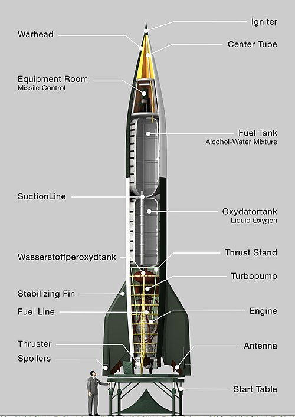

The German V-2 rocket was the world's first long-range ballistic missile and a technical marvel of World War II, powered by liquid oxygen and alcohol, and featuring an inertial guidance system and a large, powerful engine. Initially developed as the A4 (Aggregat 4) and later publicized as Vergeltungswaffe Zwei ("Vengeance Weapon Two"), it was used to attack Allied targets, notably in Europe, though its development and production involved forced labor and resulted in civilian deaths. The V-2 also set records, including being the first object to reach space on a vertical launch and laying the foundation for modern rocketry and space exploration.
